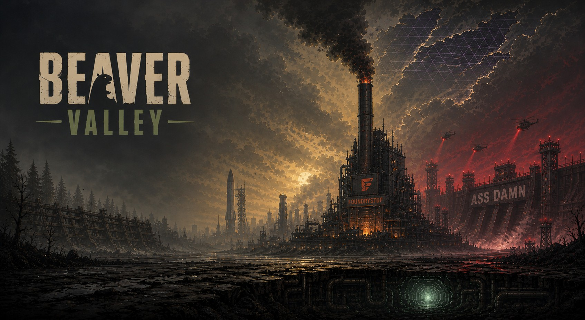
Systemic CRPG × Physics Beat-em-up
A grimy dystopian town where roughly 250 characters each have a mind of their own — they think, argue in their own voices, and start fights, lawsuits and telethons whether you’re watching or not.
Beaver Valley is a Unity 2D CRPG / beat-em-up hybrid — “without the inconsequential beating” — set in a smog-choked town whose refinery is named FOUNDRYSTOP and whose dam is, without irony, labelled ASS DAMN. On the surface it’s a side-scroller with brutal ragdoll physics, limb destruction, real blocking, and an arsenal of gleefully stupid weapons. Underneath, it’s a living town.
The hook is the cast. Around 250 named characters each have a mind of their own: they pursue their own goals, hold real conversations, react to what you do to them by name, and decide for themselves whether to fight you, flee, join your party, or call the cops. Every one speaks in their own distinct voice, and nobody is reading from a script — because there isn’t one.
It’s one persistent world where consequences stick: buildings collapse and stay collapsed, no character dies off-screen, and almost every playthrough ends differently. Push the town all the way to salvation or all the way to ruin and the two extremes pay out for real — one unlocks a brand-new Beaver Machine album, the other unlocks an entirely new mode.
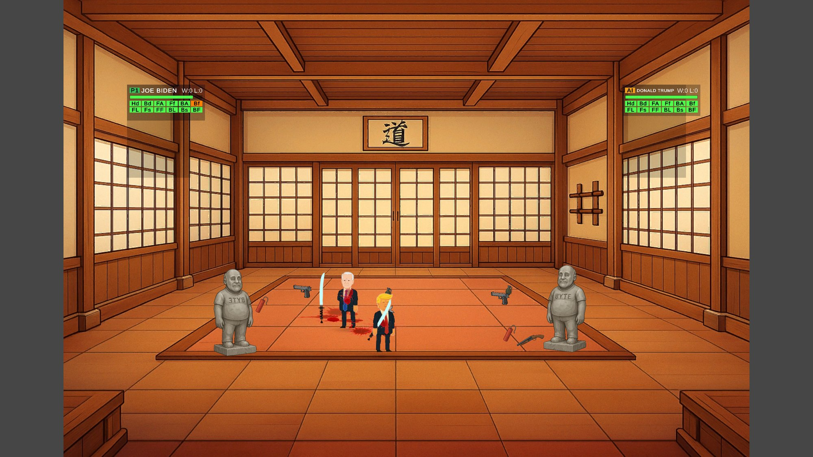
~250 characters, each with a mind of its own that thinks, talks, and acts.
Every character has their own distinct voice — and no scripted dialogue, ever.
Brutal, physics-driven, limb-shredding combat. Real blocking, no dodging.
A whole satirical town with conflicting goals that runs with or without you.
Twitch chat can walk into the story and change it live.
Dozens of ways to spend a night — see the list below. Court, war, starship, telethon, bands, jailbreaks…
Infinite endings — and the two extremes hand you real-world rewards.
This is a sandbox, not a corridor. A partial list of what a single evening in the Valley can turn into:
Self-contained games that run standalone and inside the living town.
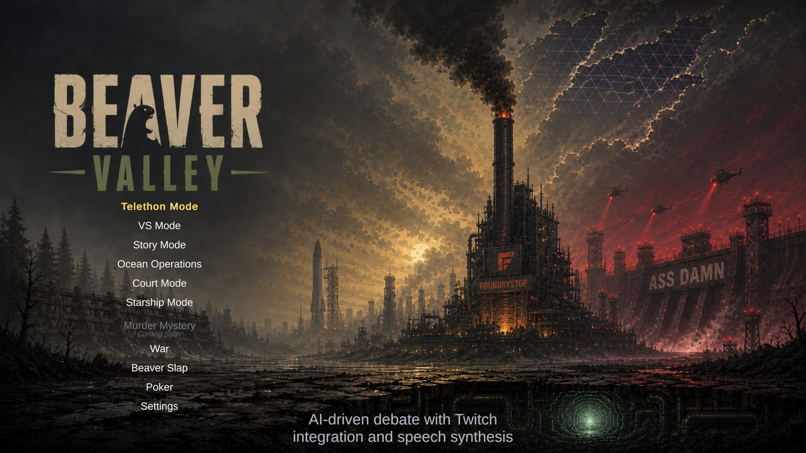
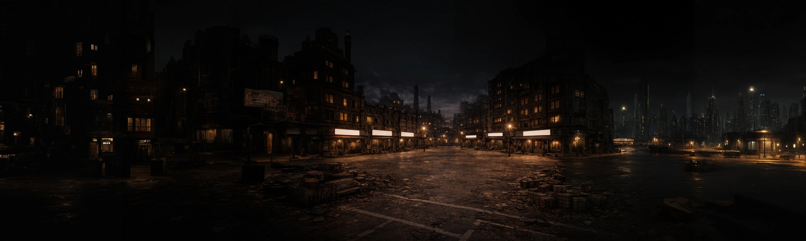
Be any of ~250 souls and roam the whole town while it lives its own day around you.
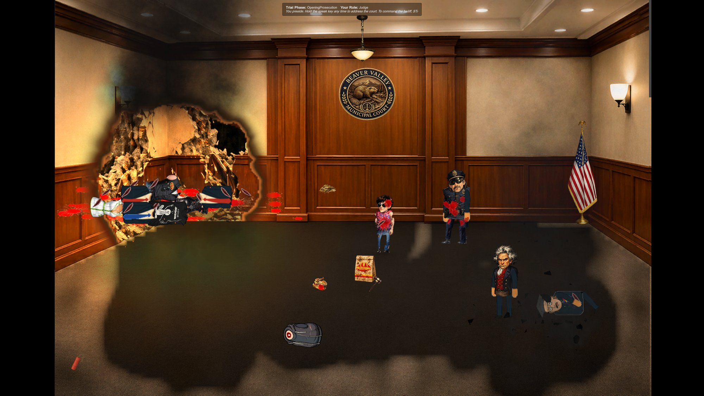
A full trial with an AI jury that genuinely decides. The innocent can hang.
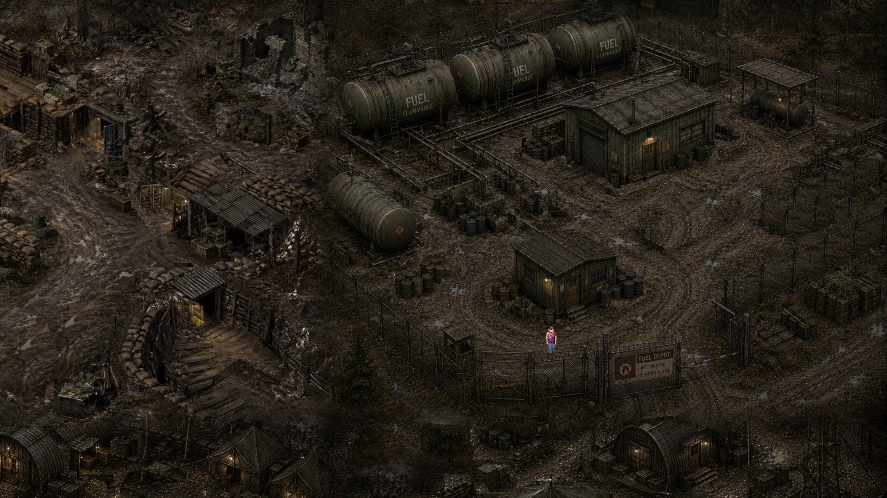
Parachute in for up to 4-player squad warfare across a dozen frontline maps.
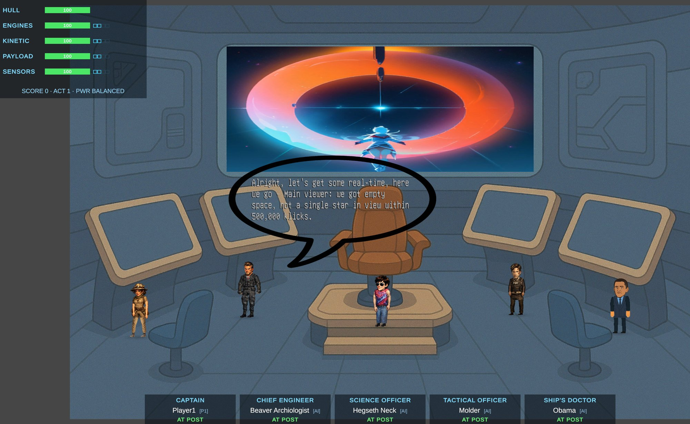
A timer-free bridge sim: five crew roles, voice orders, and a hull that rips open.
Your live Twitch chat becomes cast and combatants. Subs trigger the chaos.
Pick any two of the cast and throw them in the ring — full weapons, health bars, last one standing. Human or AI on either side.
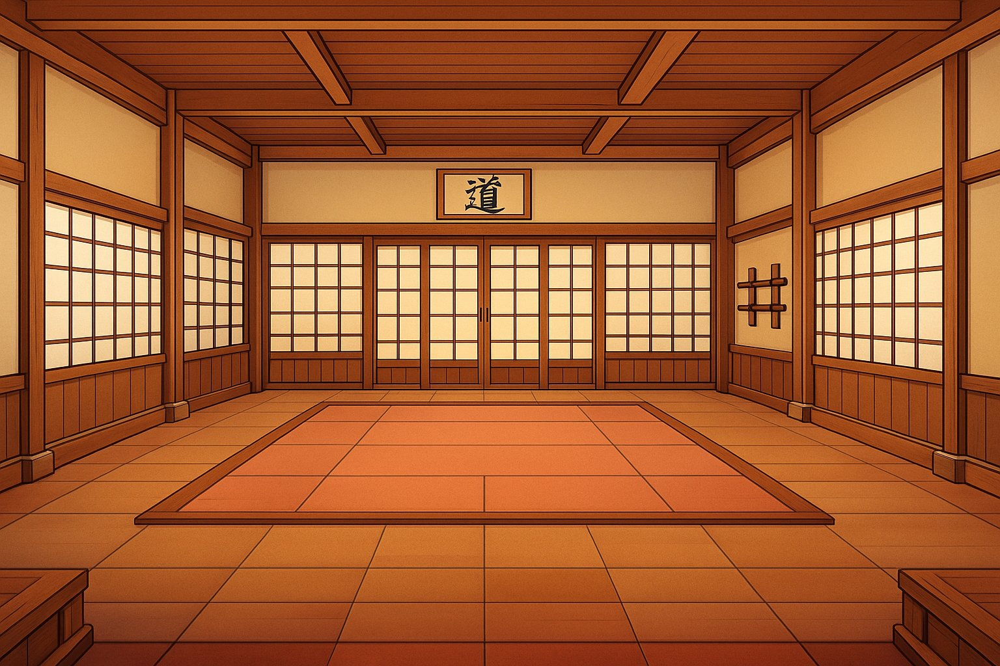
Not a brawl — a martial-arts campaign. Fight bare-handed, earn belts, climb tournaments, and here death doesn’t stick.
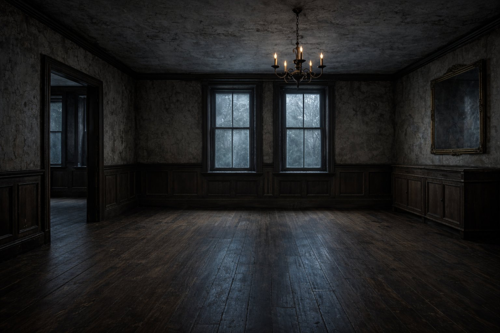
A whodunit where the suspects are AI souls who each remember it differently.
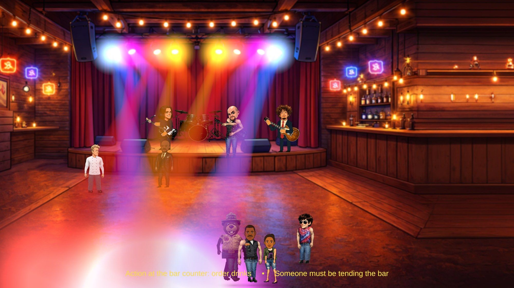
The Valley has a whole entertainment industry. Real bands play real songs on stage — drummers hit on the beat, guitarists strum in time — and crowds and soldiers break into synchronized dance routines and formations.
And the cast itself is a crossover: many characters are pulled from an existing universe of shows, all living in the Valley now.
The bands
Characters pulled from
150+ hand-built scenes across 169 locations. Here are a few — every sign means it.
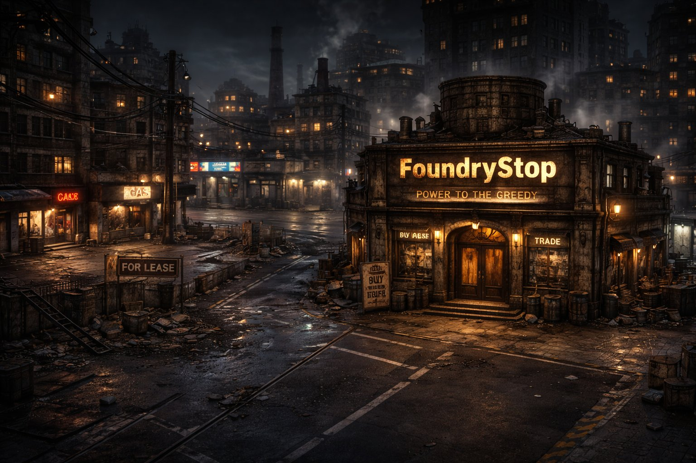
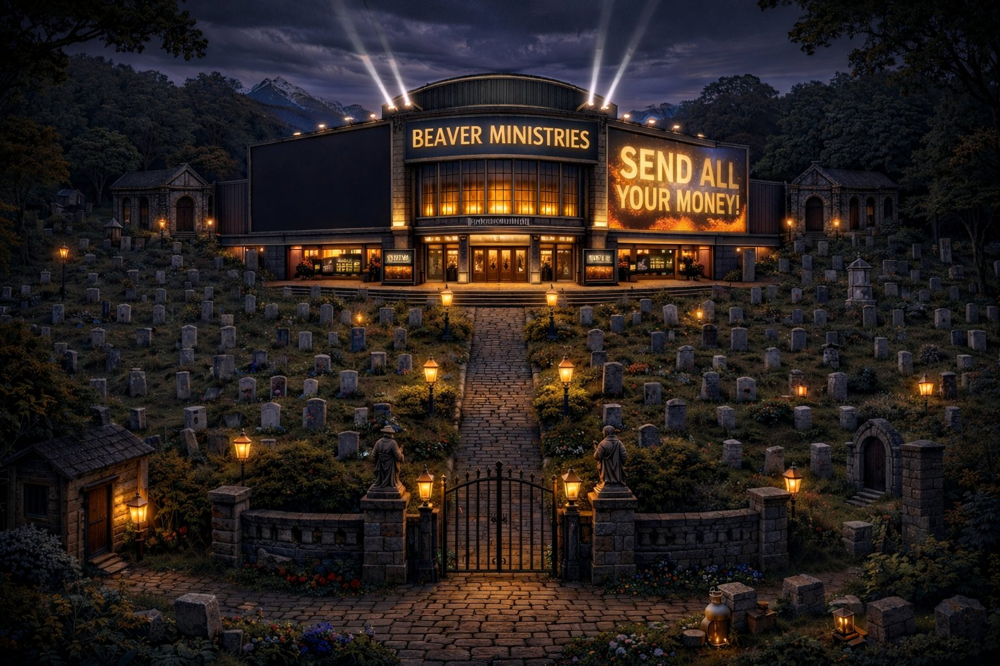
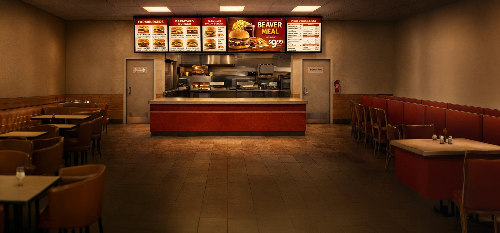
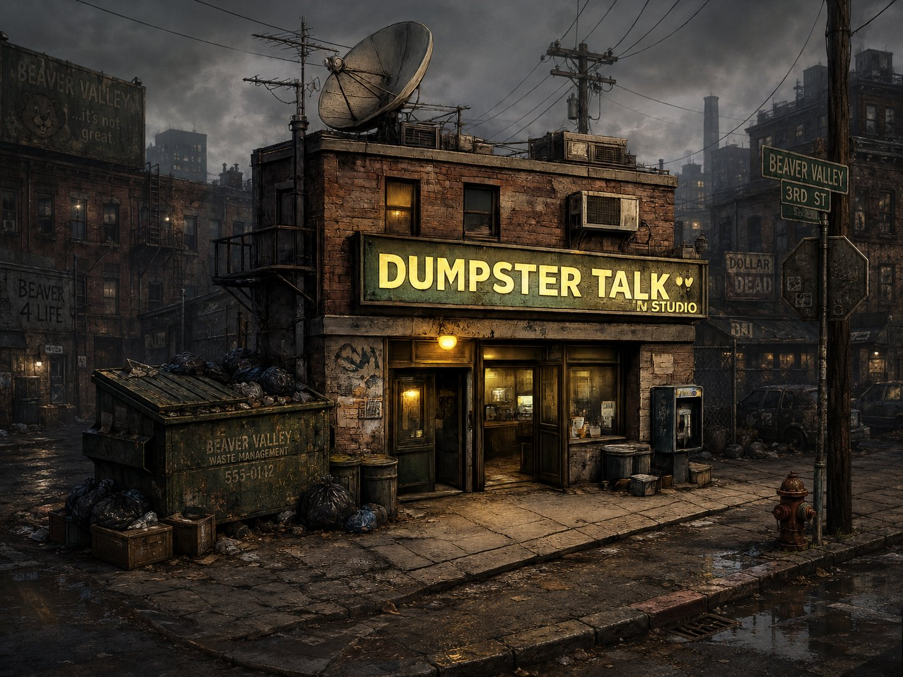
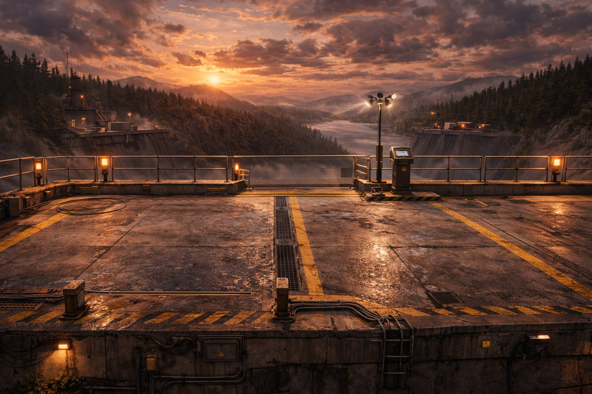
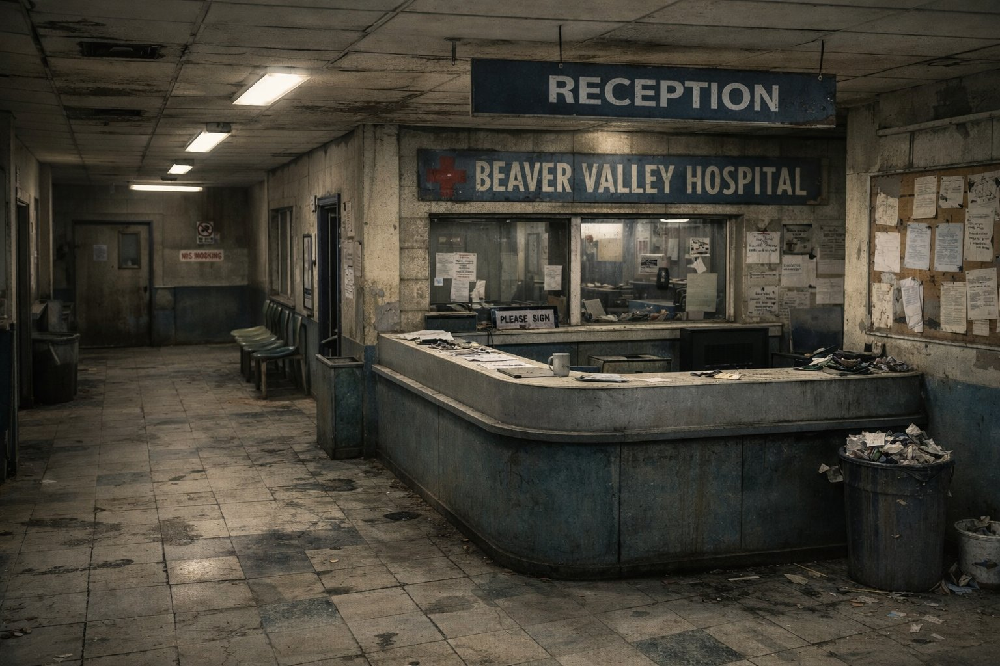
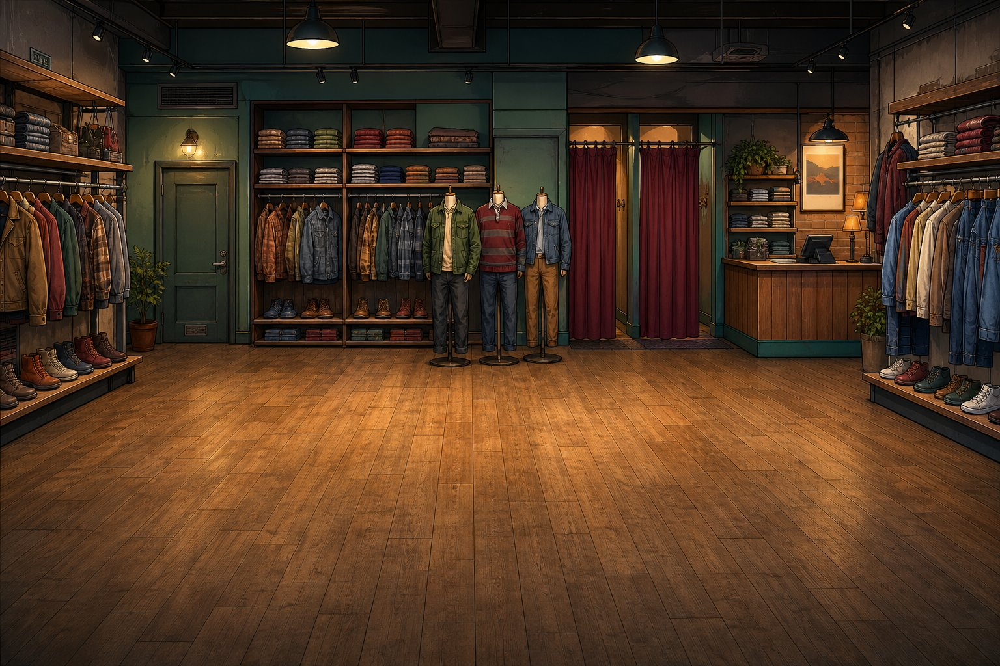
45+ locations and counting
Beaver Valley sits at the intersection of the two biggest forces in interactive entertainment: generative AI and the live-streaming creator economy. Because its ~250 characters are AI-driven with individual voices, the content is genuinely emergent — every playthrough authors its own feuds, trials and disasters, so replayability scales without hand-written content bloat. That unscripted, voice-acted drama is exactly the clippable material that fuels Twitch and short-form virality, and the built-in integration turns an audience into a participant. Most of the hard part is already done: an unusually deep systems foundation and a full 250-soul cast, built and running today, that keeps getting better as AI improves. It is a category bet on the AI-native game — and the engine is already running.
This is a town that talks back. Punch someone in the street and the bystanders don’t just flinch — they gossip about you by name, take sides, call the cops, or decide you’re exactly the kind of maniac they want in their party. Combat is chunky and physics-driven: ragdolls, dismemberment, real weapon-vs-weapon blocking, and an arsenal from flails and nunchucks to harpoon guns, tranquilizer rifles, mops, rocket launchers and throwable landmines. You can be any of the ~250 characters, each with their own agenda and voice, and the world keeps churning around you. It’s emergent chaos with a body count and a laugh track — and it reacts to everything you do.
“It’s a beat-em-up without the inconsequential beating.”
“The dam is labelled ASS DAMN. That is the least of your problems.”
“No one dies off-screen. We made sure you’d have to watch.”
“250 souls. One town. No scripts.”
“Save the town, get an album. End the town, unlock a mode.”
“The talk show is live, the hosts are drunk, and the AI is not scripted.”
“Infinite endings. Two of them pay out in the real world.”
Land in the credits — or get a character with your face and a mind of its own, walking the mainline game forever.
Support the Valley →